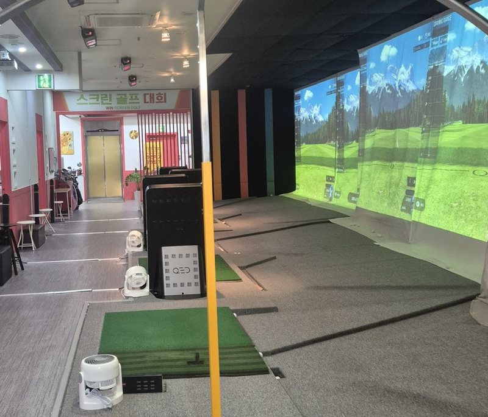

11월 중순이 지나면 골프 이야기가 조금 달라집니다. 필드 예약은 잡기 어려워지고, 그린은 얼고, 아침 라운드는 장갑을 두 겹 껴도 손끝이 아립니다. 시즌이 끝난 게 아니라, 장소가 바뀌는 겁니다.
숫자로도 그렇습니다. 대한골프협회가 낸 ‘2025 한국골프지표 조사’(2026년 11월 4일 보도)를 보면, 2025년에 처음 골프를 시작한 사람 가운데 29.1%가 골프연습장에서, 23.3%가 실내스크린에서 입문했습니다. 둘을 합치면 52.4%. 새로 골프를 시작한 두 명 중 한 명은 실외 필드가 아니라 연습장이나 스크린을 거쳐 들어왔다는 뜻입니다.
재미있는 건 그다음입니다. 같은 조사에서 골프장·연습장·실내스크린 회원 수는 2023년보다 모두 줄었는데, 남아 있는 사람들의 이용 횟수는 오히려 늘었습니다. 실내스크린 이용자는 연평균 18.8회로 2023년보다 4.3회 늘었고, 1년에 20회 넘게 간다는 사람이 38.6%로 가장 많았습니다. 연령별로는 40대가 21.1회로 제일 잦았고요.
줄어든 사람은 가끔 치던 사람이고, 남은 사람은 자주 치는 사람입니다. 그래서 겨울에는 실내 연습장 자리가 일찍 차곤 합니다. 필드 대신 실내로 옮겨온 사람들이 그 자리를 채우니까요.
첫째, 시간을 짧게 잡습니다. 18홀 한 판이면 한 시간 안쪽으로 끝나는 경우가 많습니다. 퇴근길에 한 판, 주말 아침에 한 판. 길게 잡으면 오히려 안 갑니다.
둘째, 숫자를 봅니다. 겨울에 몸이 굳으면 스윙이 짧아지는데, 그게 느낌으로는 잘 안 잡힙니다. 화면에 뜨는 클럽 스피드와 볼 스피드를 보면 ‘오늘 몸이 안 풀렸구나’가 5분 만에 판정됩니다.
셋째, 실외에서 못 한 걸 실내에서 합니다. 그린이 얼어 못 하던 퍼팅, 바람 때문에 포기했던 거리 맞추기. 겨울은 기록을 줄이는 계절이 아니라, 손보는 계절입니다.
부산 해운대구 좌동, 해천빌딩 6층에 WON 스크린골프가 있습니다. 간판은 WON 스크린골프, 등록된 이름은 윈스크린골프연습장입니다. 장산역 13번 출구에서 173m, 대림아크로텔 옆 건물이라 걸어서 갈 수 있습니다.
김캐디에 등록된 타석은 QED 4타석과 일반 3타석입니다. 화면으로 자세를 보면서 치고 싶은 날은 QED 쪽, 그냥 공을 시원하게 치고 싶은 날은 일반 쪽으로 가면 됩니다. 매장 1층 배너와 네이버 지도 가격표 기준으로 스크린 18홀 10,000원, 연습장 1시간 10,000원입니다. 연습장 정기권은 1개월 12만 원, 3개월 33만 원, 6개월 60만 원으로 적혀 있습니다.
차를 가져가면 건물 지하주차장이나 타워주차장을 쓰고 주차권에 도장을 받으면 됩니다. 겨울엔 주차장에서 건물까지가 추우니, 도착 전에 전화로 자리를 확인하고 출발하면 덜 헤맵니다.
051-747-9933타석과 스크린 룸, 단체 이용은 전화로 예약하시는 게 가장 빠릅니다.